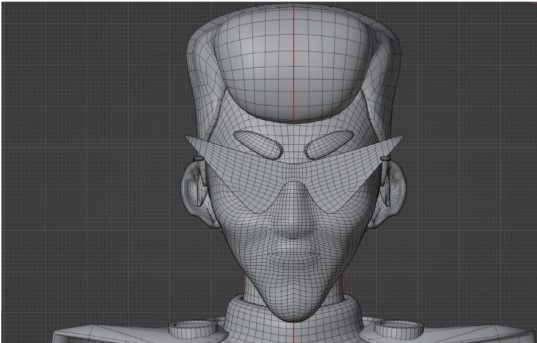
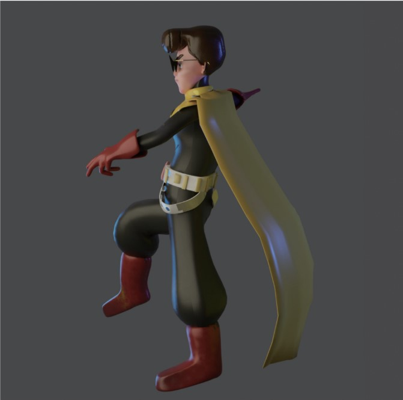
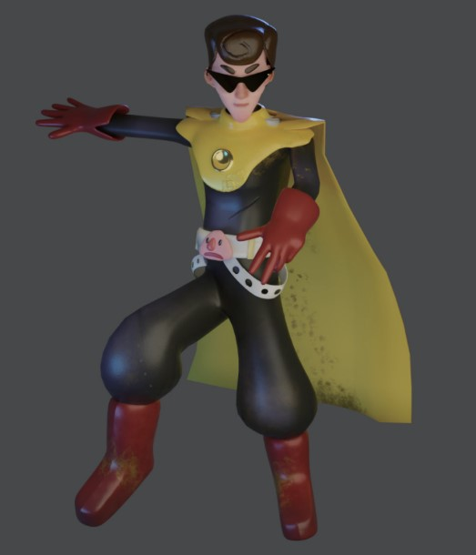
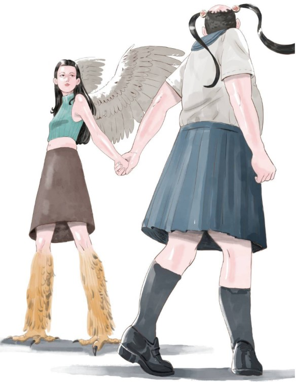
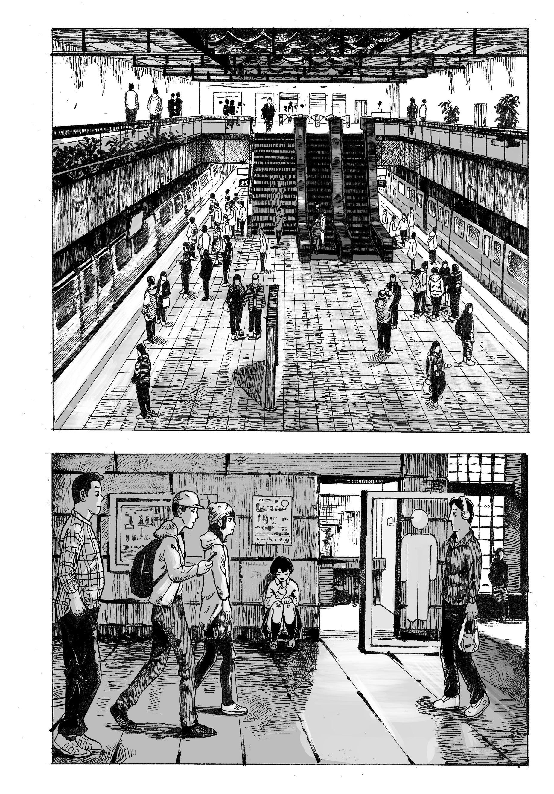
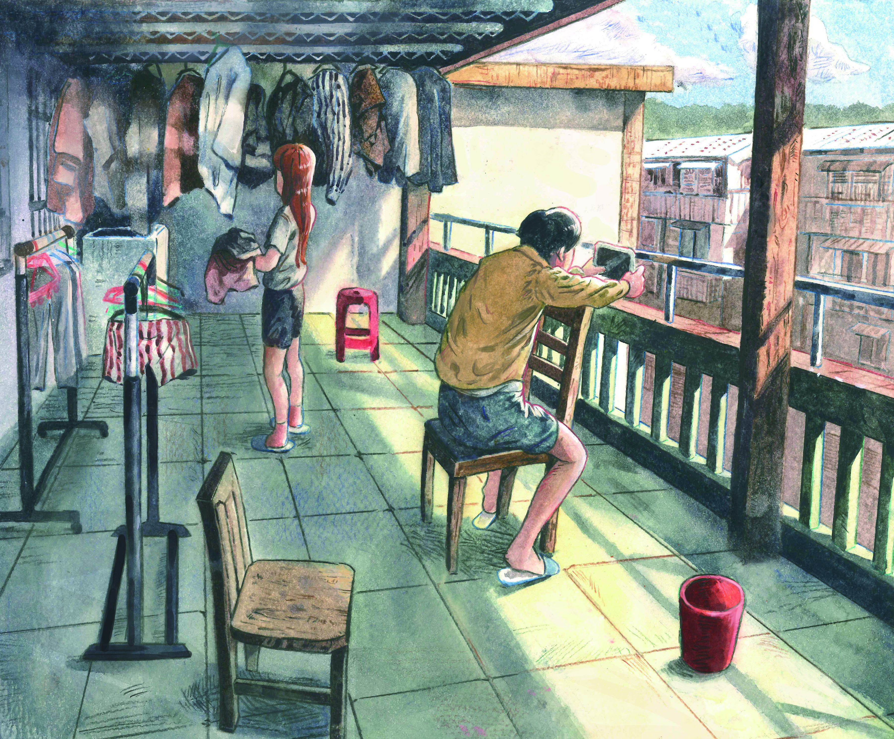

Portfolio / Illustration / Character / 3D
平面設計 / 插畫 / 角色
以下整理學生時期與個人創作作品，包含 3D 角色建模、角色設計、場景插畫與漫畫分鏡。 這些作品主要呈現我的造型設計能力、畫面構成、敘事分鏡與視覺風格探索。
作品整理重點
這一類作品不是以電商轉換為主，而是補充呈現我的美術基礎、角色造型、空間透視與敘事構圖能力。 對於需要視覺發想、插畫輔助、角色素材或商品風格延伸的工作，也能作為設計能力參考。
01 / 3D MODELING
3D 角色建模
角色模型練習，包含角色造型、姿勢、側面結構與線框建模。

3D Modeling
3D 角色展示
角色比例、服裝造型與整體色彩設定，呈現角色完整外觀。

Side View
角色側面結構
從側面檢視角色姿勢、披風、身體比例與造型剪影。

Wireframe
模型線框
頭部與五官結構建模練習，呈現模型布線與立體結構。

Pose
角色姿勢展示
透過動作姿態呈現角色個性、肢體動勢與英雄感剪影。
02 / CHARACTER DESIGN
角色設計 / 插畫
以角色外型、服裝、氣質與世界觀氛圍為主的創作作品。

Character
角色設計
人物造型與幻想元素結合，探索角色身體特徵與視覺辨識度。

Scene
生活場景構圖
以陽台空間、人物動作與光影建立日常敘事感。
03 / COMIC STORYBOARD
漫畫分鏡 / 場景構圖
包含黑白漫畫分鏡、空間透視、人物動線與故事氣氛安排。

Comic
漫畫分鏡
透過場景透視、人物站位與黑白線稿，練習敘事節奏與畫面調度。